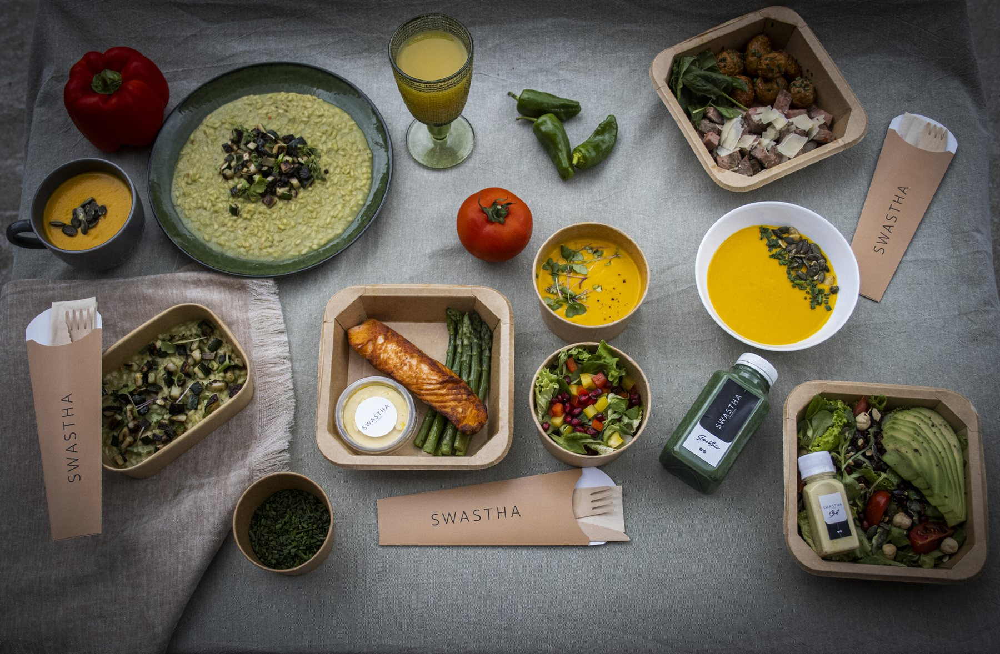

The first question most people type when they plan catering is about price: catering for 30 people, how much? The more useful first question is how much food thirty people need, because that is what the price is built on. Order too little and the last ten people in line get what is left. Order too much and you will pay for trays that end up in the bin. This guide gives you starting quantities for common group sizes, and shows what changes as a group grows. The numbers are starting points, not a rule, and an experienced caterer will adjust them to your menu and your people.
Start With the Format, Not the Number
Three formats cover almost every order, and each is counted differently. A full meal replaces lunch: soup or starter, main course, salad. A buffet replaces a meal as well, but people serve themselves, so appetites vary and you need a margin. Finger food depends on the clock: it can be a snack between sessions or a whole dinner eaten standing up. Before you ask how much, decide which of these you are ordering, and at what time of day. Thirty people at noon and thirty people at three in the afternoon are not the same order.
Quantities Per Person
For a full meal, a sensible starting point is 250 to 300 ml of soup, 120 to 150 g of cooked meat or fish or a generous vegetarian equivalent, 150 to 180 g of side dish, and about 100 to 120 g of salad. If you add more types of main course, the portion of each should shrink, not stay the same. For finger food, count 2 to 3 pieces per person for a coffee break, 6 to 8 for a light gathering, and 12 to 15 if it replaces dinner. For drinks, count about half a litre of water per person, plus one to two cups of coffee at a morning event.
Worked Totals for 10, 20, 30 and 50
Using the middle of those ranges, here is what a full meal adds up to before any margin. These are the numbers worth checking against any offer:
- 10 people: about 3 litres of soup, 1.5 kg of cooked main protein, 2 kg of side dish, 1 kg of salad, 5 litres of water.
- 20 people: about 6 litres of soup, 3 kg of protein, 3.5 kg of side dish, 2 kg of salad, 10 litres of water.
- 30 people: about 8 litres of soup, 4 kg of protein, 5 kg of side dish, 3.5 kg of salad, 15 litres of water.
- 50 people: about 14 litres of soup, 7 kg of protein, 8 kg of side dish, 5.5 kg of salad, 25 litres of water.
What Changes as the Group Grows
Ten people is a meeting: individually packed meals are the easiest choice. Twenty is where you start to have a real choice between packed meals and a small buffet, and the decision is mostly about space. Thirty is the turning point. Allow roughly twenty to thirty seconds per person at a one sided buffet line, and thirty people will spend ten to fifteen minutes in the queue, while the first ones are already finishing. At fifty, you plan like an event: a two sided line or two stations, more than one serving moment, and someone on site to keep things moving.

"Thirty people is the point where a big lunch quietly becomes a small event."
The Margin: How Many People Actually Turn Up
With individually packed meals, order the confirmed number and only a spare or two. With a buffet, a margin of 5 to 10 percent is usually enough, and it covers the fact that some people take more than a standard portion. Do not add extra for every possible guest as well. Offices and events usually see a few people miss out at the last minute, which already builds a cushion into your number. If you are not sure, order to your realistic count and agree on a final confirmation deadline with your caterer. That one date saves more money than any discount.
What Moves the Price
There is no honest single answer to what catering for thirty people costs, because three orders for thirty can be three different services. The price depends on the menu and its ingredients, the number of courses, the amount of service and equipment, delivery distance and timing, and how much notice you give. Price per head also tends to fall as numbers grow, as one kitchen run spreads across more meals. Instead of asking for a price list, ask for a quote with the items above written out. Our article on what catering costs per person goes through each of these.
What to Tell a Caterer in One Message
Most of the back and forth disappears if your first message includes six things: the date and time, the address, the number of people, the occasion, any dietary needs, and whether you have a table, plates and somewhere to keep things warm. Add your budget if you have one, because it is the fastest way to get an offer that fits. With those details, a good caterer can reply with a real proposal rather than a list of questions.
The Bottom Line
Choose the format first, count from the quantities above and keep your margin honest. If you run a recurring lunch rather than a one off order, look at our daily meals for employees. Otherwise, send us your date, place and number of people, and we will reply within 24 hours with a menu and a proposal.